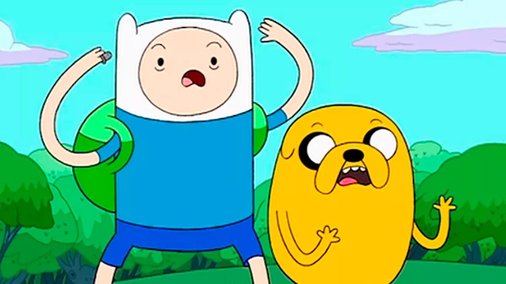

¡Ah, Hora de Aventuras! Este es el tipo de serie que te saca una sonrisa tanto si eres un niño como si ya tienes la barba de los 30. Creada por Pendleton Ward, Hora de Aventuras es un viaje alucinante al Mundo de Ooo, donde todo es posible y hasta los personajes más extraños tienen historias profundas. Finn, el último humano (o eso cree él) y Jake, su perro mágico que puede estirarse como un chicle, nos llevan por un mundo lleno de criaturas, magia y criaturas mágicas con problemas existenciales. No solo es una comedia tonta de aventuras, sino que también toca temas profundos como la amistad, la identidad, la soledad y el destino. O sea, es un show que tiene todo, desde batallas épicas hasta reflexiones filosóficas… y de paso te hace pensar en lo que podrías estar haciendo con tu vida.
Hora de Aventuras es una fiesta visual que atrae tanto a los amantes del arte como a los que buscan un diseño único. La paleta de colores, las formas geométricas y el estilo visual sencillo pero detallado crean un mundo donde todo parece al mismo tiempo infantil y surreal. La serie no escatima en lo raro: el cielo naranja, los árboles que parecen dibujados a mano, y el diseño de personajes que pueden pasar de lo adorable a lo grotesco en un abrir y cerrar de ojos. Cada episodio es un lienzo en movimiento, una invitación a dejarse llevar por la imaginación y perderse en paisajes que combinan lo onírico con lo absurdo. Y lo más fascinante es que, a pesar de su estilo simple, cada personaje y escenario tiene su propio trasfondo visual que refuerza las emociones y temas que se tratan en cada aventura.
Aunque Hora de Aventuras podría parecer, a simple vista, una simple serie de aventuras y humor, es un caleidoscopio de símbolos que invitan a la reflexión. Desde el pasado apocalíptico que subyace en el Mundo de Ooo hasta las figuras de villanos como la Reina de Hielo o el Lich, cada elemento en la serie está cargado de significados ocultos. Por ejemplo, el personaje de Marceline, la vampira, no es solo una chica rockera, sino un reflejo de la complejidad emocional, con temas que tocan la soledad, la paternidad y la reconciliación. Además, la trama a menudo juega con conceptos como el ciclo de la vida, la muerte y la renovación, ofreciendo una interpretación filosófica de las relaciones humanas y los conflictos internos. Hora de Aventuras, a través de su enfoque creativo, lleva a los espectadores a cuestionar más allá de lo evidente.

Los personajes de Hora de Aventuras no se quedan estáticos en su desarrollo. A medida que la serie avanza, se puede ver cómo Finn, Jake, Marceline y los demás enfrentan retos que les cambian de maneras profundas. Finn, quien empieza siendo un niño impulsivo y lleno de curiosidad, se convierte en un joven que lucha con la realidad de ser el último humano y con las responsabilidades que conlleva. Jake, su perro mágico, aunque sigue siendo el mismo compañero leal y relajado, enfrenta también sus propios dilemas sobre el paso del tiempo y el sentido de la vida. Marceline, por otro lado, pasa de ser la temida vampira rebelde a explorar su lado más vulnerable. Cada personaje experimenta un crecimiento que se siente genuino, lo que le da a la serie una dimensión emocional que muchas otras producciones animadas no logran capturar.
Si hay algo que Hora de Aventuras sabe hacer a la perfección, es integrar la música dentro de su narrativa. Las canciones, a menudo espontáneas y cargadas de emoción, no solo se quedan como momentos divertidos, sino que profundizan en los sentimientos y conflictos de los personajes. Desde las baladas melancólicas de Marceline hasta las canciones más extrañas de los personajes secundarios, la música se convierte en una herramienta para comunicar lo que las palabras no pueden. La famosa “I’m Just Your Problem” de Marceline, por ejemplo, no es solo una canción pegajosa, sino una ventana a sus sentimientos de abandono y su relación con su padre. La serie demuestra que, cuando se hace bien, la música no es solo un acompañante, sino una extensión del propio relato emocional.